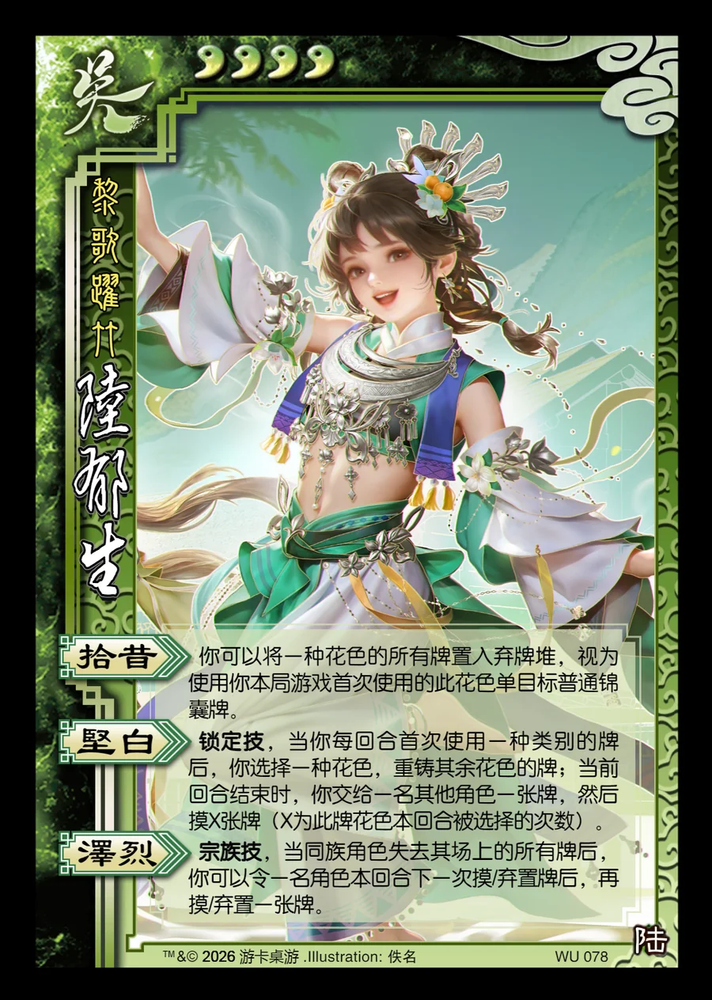

点击卡面查看大图
吴
族陆郁生
♥4黎歌跃竹
拾昔
你可以将一种花色的所有牌置入弃牌堆，视为使用你本局游戏首次使用的此花色单目标普通锦囊牌。
坚白锁定技
锁定技，当你每回合首次使用一种类别的牌后，你选择一种花色，重铸其余花色的牌；当前回合结束时，你交给一名其他角色一张牌，然后摸X张牌（X为此牌花色本回合被选择的次数）。
泽烈宗族技
宗族技，当同族角色失去其场上的所有牌后，你可以令一名角色本回合下一次摸/弃置牌后，再摸/弃置一张牌。